Autism Nova
Ein ruhiger Alltagsbegleiter für autistische Kinder – und für euch Eltern.
Bilder statt vieler Worte, eine Sprechtafel, Lernspiele, Hilfen zum Beruhigen und ein Elternbereich mit Programmen, die sich an der Forschung orientieren. Alles bleibt auf dem Gerät.
- iPhone und iPad – Android und Windows folgen
- Deutsch und Englisch
- Einmal kaufen, kein Abo
- Keine Werbung
Im App Store laden Für Android und Windows: bald
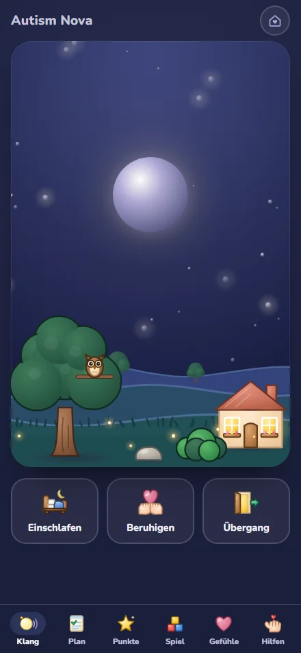
Was Autism Nova kann
Die App hat zwei Seiten: eine für euer Kind, die ruhig und ohne Druck funktioniert, und eine für euch Erwachsene, hinter einer Sperre, die ein Kind nicht aus Versehen öffnet.
Für dein Kind
- Klänge zum Einschlafen, Beruhigen und für Übergänge.
- Plan und Hilfen: Tagesplan in Bildern, Erst–Dann, Wahltafel, Schritt für Schritt, ein „Noch kurz“-Timer mit sanfter Vorwarnung und eine Warte-Karte für Arzt, Friseur und Bus.
- Gefühle und Körper: Gefühls-Ampel, Beruhigungsplan und kleine Übungen, den eigenen Körper zu spüren.
- Sprechen: eine Sprechtafel mit Kernwörtern auf festen Plätzen und eine Satzleiste. Dein Kind muss nicht sprechen – Zeigen und Tippen genügt.
- Lernen und Spielen: Zahlen, Buchstaben nachspuren, Malen, Bewegungsspiele und ein Bilderbuch zum Vorlesen lassen.
Für euch Eltern
- Schlafprogramm in neun Bausteinen, angelehnt an ein geprüftes Elternprogramm, mit Auswertung eures Schlaftagebuchs.
- Mein Pass: ein Steckbrief, den ihr für Arzt, Schule, Friseur oder Oma ausdrucken oder als Karte teilen könnt.
- Vorbereitungspakete für Zahnarzt, Friseur, Krankenhaus, Schulstart, Reise und mehr – mit Bildergeschichte und Checkliste.
- Krisenplan, Protokoll und Berichte: Muster erkennen, ohne zu bewerten, und einen Bericht für Therapie oder Arztgespräch erzeugen.
- Gemeinsam spielen und Modellieren: kurze Anleitungen, wie ihr die Sprechtafel mit eurem Kind benutzt.
- Für dich: Achtsamkeits-Minuten, ein Selbstcheck und ein Wegweiser zu Entlastung und Unterstützung.
- Auf einen Blick: eure Wochen, Meilensteine und bis zu drei Ziele.
Das Bilderbuch
Zehn kurze Geschichten in sanften Aquarellbildern – vom Einschlafen über die Busfahrt bis zur Pfütze. Zu jeder Seite gehört ein kurzer Satz, unter dem Satz stehen die Wörter noch einmal als kleine Bildkarten. Die Seite lässt sich vorlesen, oder ihr lest selbst.
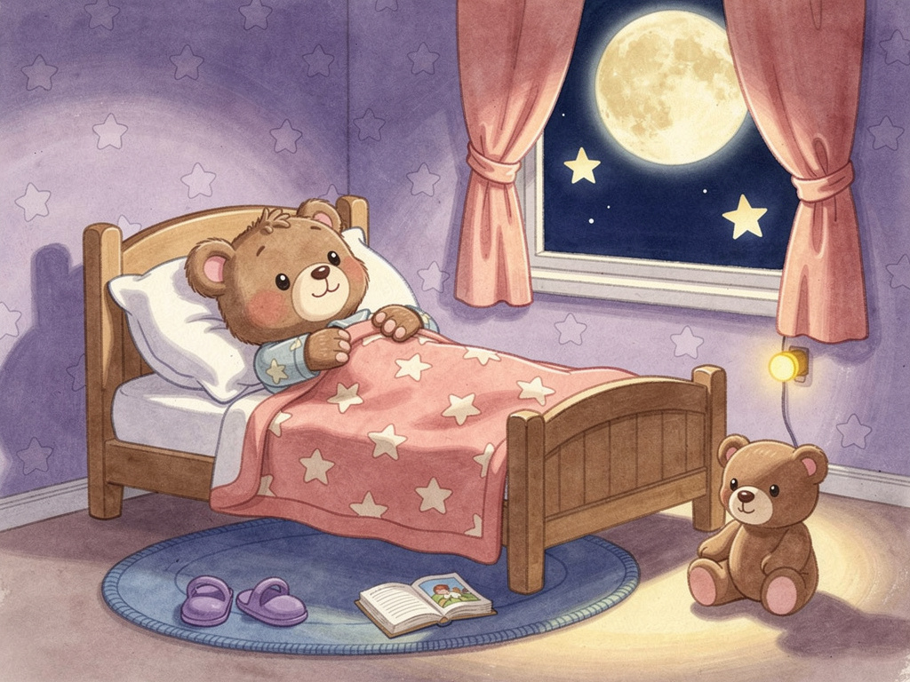
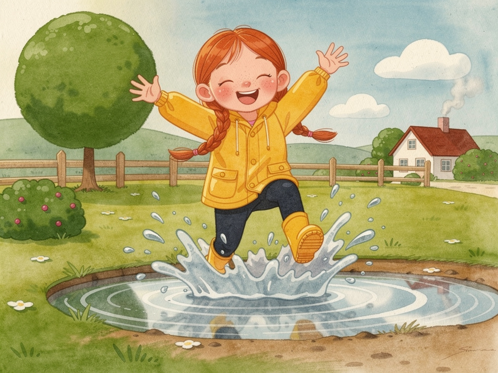
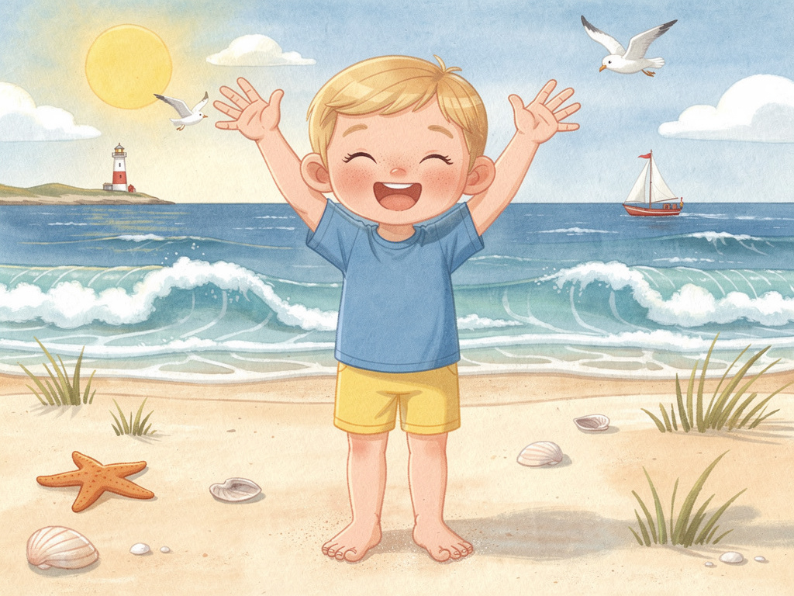
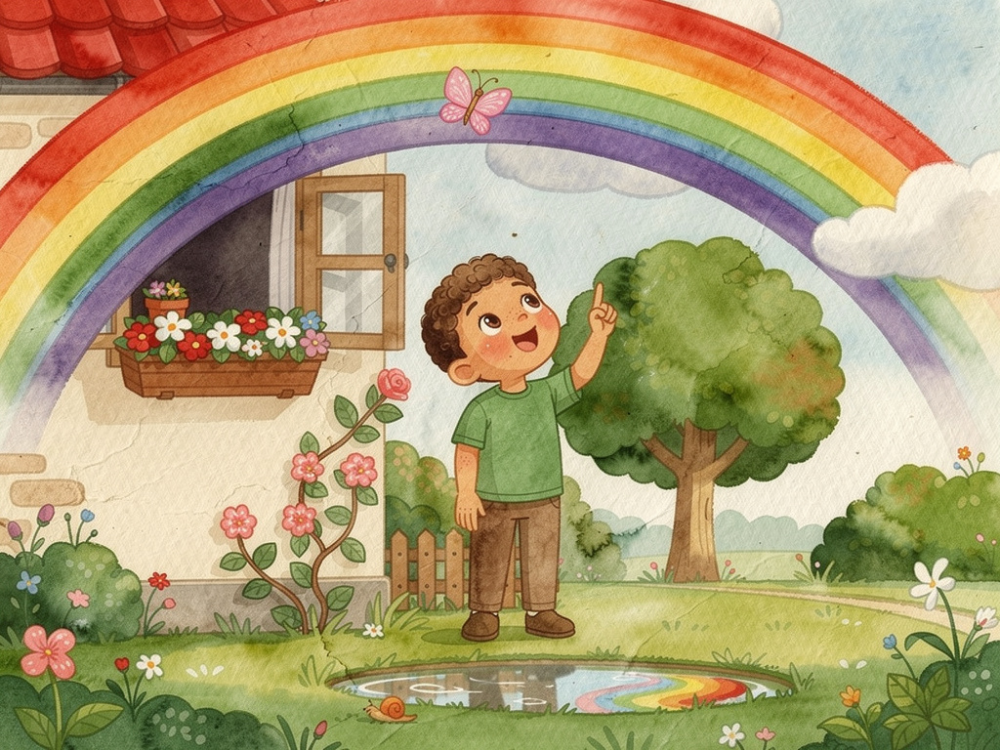
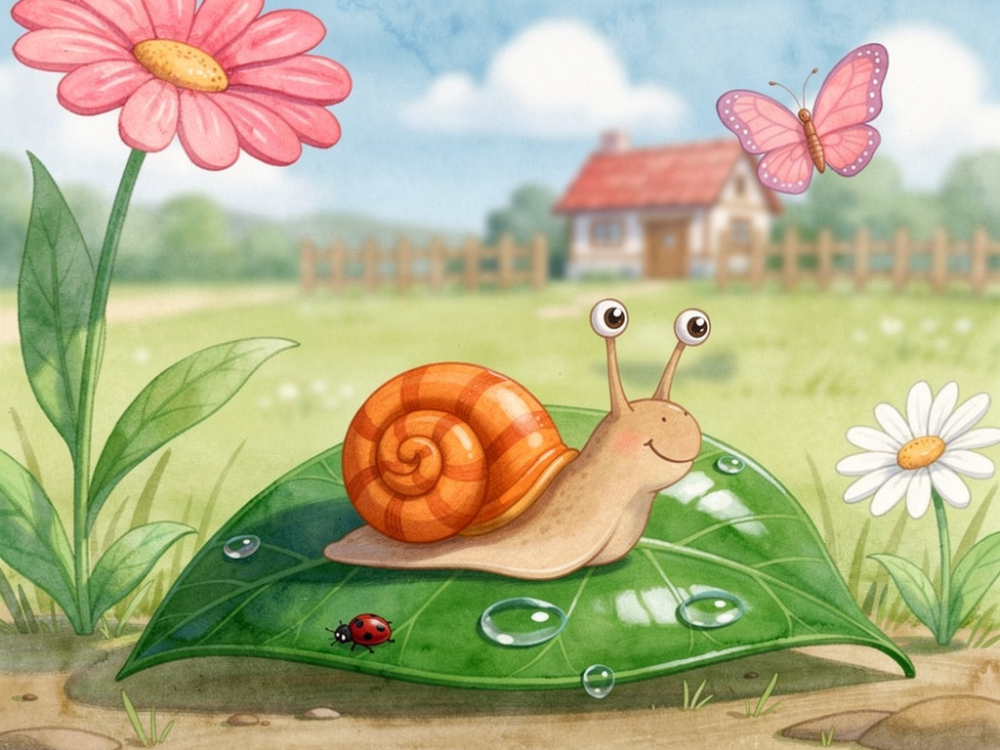
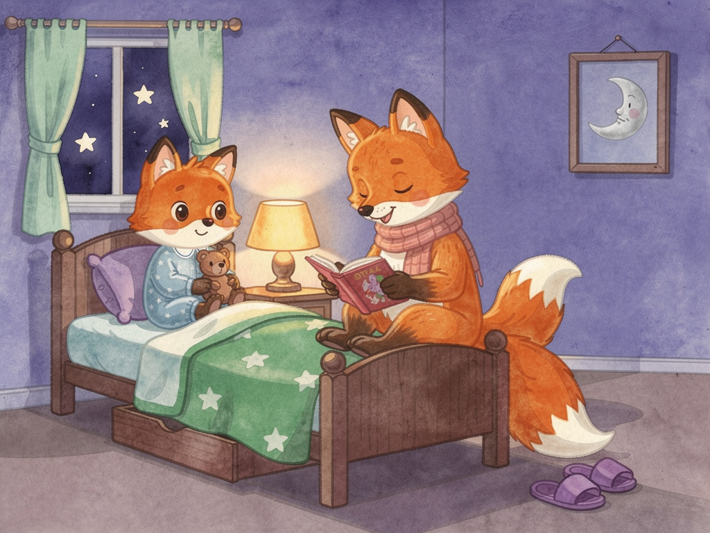
So sieht es aus
Ruhige Farben, große Flächen, klare Bilder. Nichts blinkt, nichts läuft ab, kein Fehlerton.
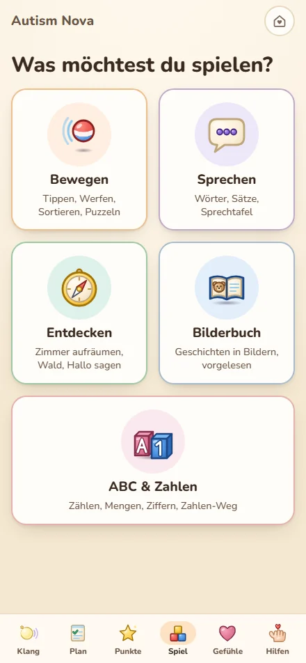
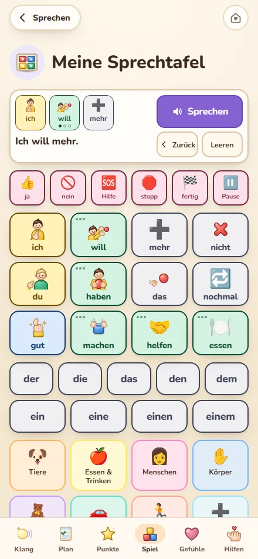
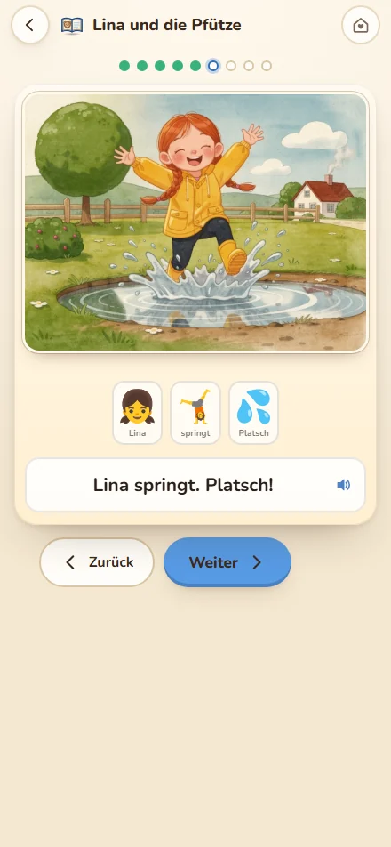
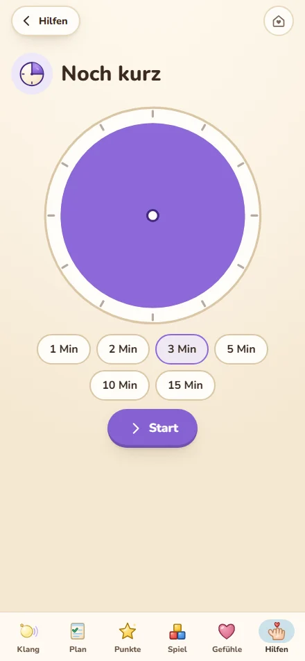
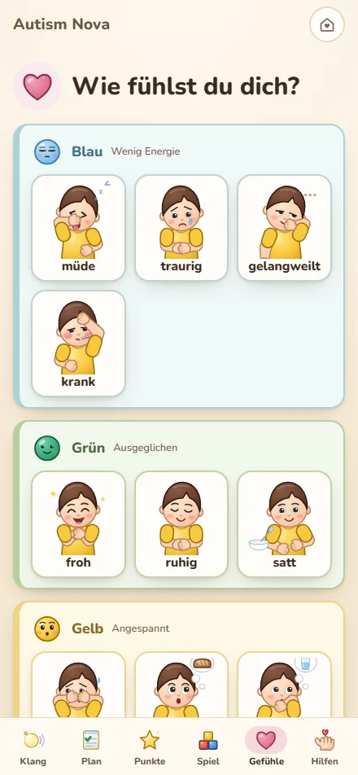
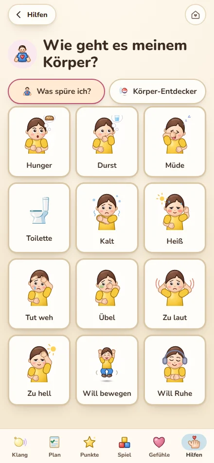
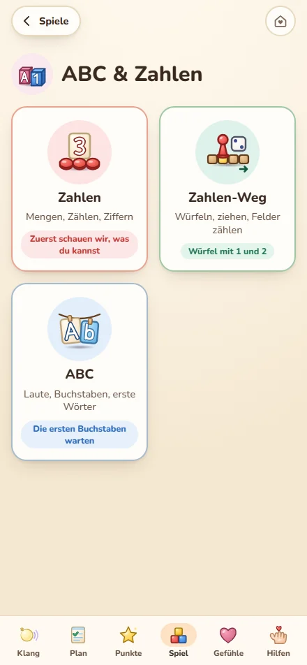
Unsere Haltung
Autism Nova soll nicht aus einem autistischen Kind ein unauffälliges machen. Es soll eurem Kind helfen, zu zeigen, was es braucht – und euch, es zu verstehen.
Ruhig statt laut
Kein Zeitdruck, keine Fehlertöne, keine Punktejagd. Wer die Bewegung im Gerät reduziert hat, bekommt eine ruhigere App.
Ehrlich statt versprechend
Bei jedem Bereich steht, wie gut er belegt ist. Wir versprechen keine Heilung und keine Fortschritte.
Du entscheidest
Ihr kennt euer Kind. Alles lässt sich ein- und ausschalten, wiederholen oder ignorieren. Sprechen ist nie Voraussetzung.
So beschriften wir, was wir wissen
Autism Nova ist kein Medizinprodukt, keine Therapie und stellt keine Diagnose. Die App ersetzt keine ärztliche, logopädische, ergotherapeutische oder psychologische Begleitung.
Eure Daten gehören euch
In der App stehen sensible Dinge: Name, Verhalten, Schlaf, Gesundheit. Deshalb bleibt alles auf eurem Gerät.
- Alles bleibt auf dem Gerät. Es gibt keinen Server, auf den etwas hochgeladen wird.
- Kein Konto, keine Anmeldung. Ihr müsst keine E-Mail-Adresse angeben.
- Keine Werbung, kein Tracking, keine Statistik-Dienste. Niemand erfährt, wie oft ihr die App nutzt – auch wir nicht.
- Sicherung nur auf euren Wunsch. Mit einem Knopf speichert ihr alles als Datei, zum Beispiel für ein neues Gerät.
- Löschen jederzeit. Ein Knopf im Elternbereich entfernt alles.
Häufige Fragen
Für welches Alter ist die App?
Die Inhalte richten sich an Kinder vom Kleinkind- bis ins Grundschulalter. Autistische Kinder sind sehr verschieden, deshalb entscheidet ihr, welche Bereiche zu eurem Kind passen. Vieles ist auch für ältere Kinder nutzbar.
Muss mein Kind sprechen können?
Nein. Alle Übungen lassen sich durch Zeigen und Tippen beantworten. Für Kinder, die nicht oder kaum sprechen, gibt es die Sprechtafel.
Braucht die App Internet?
Nein. Alles läuft ohne Internetverbindung.
Was kostet sie?
Autism Nova wird einmal gekauft, es gibt kein Abo und keine Werbung. Im deutschen App Store kostet sie 24,99 €; in anderen Ländern rechnet der Store den Preis um. Alle Updates sind inklusive.
Ersetzt die App eine Therapie?
Nein. Sie ist eine Alltagshilfe für Familien. Bei Sorgen um die Entwicklung eures Kindes sind eure Kinderärztin, euer Kinderarzt oder eine Frühförderstelle die richtigen Ansprechpartner.
Gibt es die App auch auf Englisch?
Ja. Autism Nova gibt es auf Deutsch und auf Englisch. Die Sprache wählt ihr bei der Einrichtung oder später im Elternbereich. Dann wechseln Texte, Bilderbuch, Sprechtafel, Buchstaben und Zahlen. Die Vorlesestimme kommt vom Gerät.
Kann ich den Kauf widerrufen?
Ja, innerhalb von 14 Tagen nach Vertragsschluss, soweit dir ein gesetzliches Widerrufsrecht zusteht. Ohne Begründung, ohne Anmeldung: Vertrag widerrufen. Dort stehen auch die Widerrufsbelehrung und das Muster-Formular. Beachte: Im Apple App Store und bei Google Play stimmst du beim Kauf zu, dass die App sofort bereitgestellt wird; damit kann das Widerrufsrecht vorzeitig erlöschen.
Was passiert mit meinen Daten, wenn ich das Gerät wechsle?
Sie bleiben auf dem alten Gerät. Erstellt vorher im Elternbereich unter „Daten“ eine Sicherung und spielt sie auf dem neuen Gerät wieder ein. So geht es Schritt für Schritt.
Fragen, Wünsche, Fehler?
Wir freuen uns über Rückmeldungen von Familien und von Fachleuten. Bitte schickt keine Angaben über euer Kind mit.